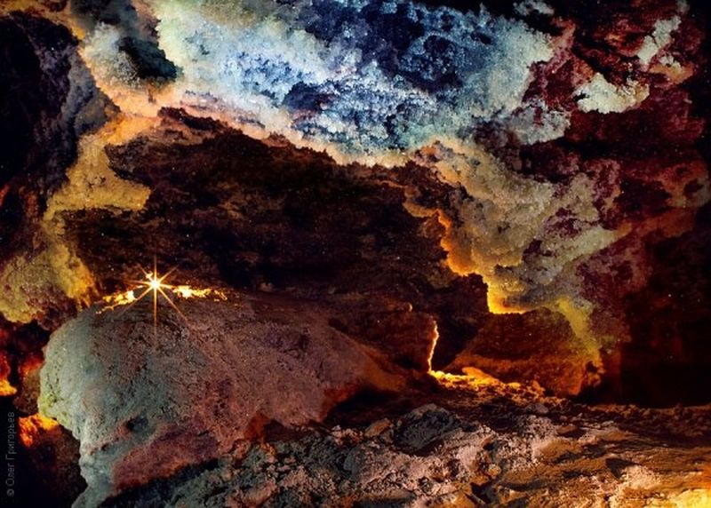
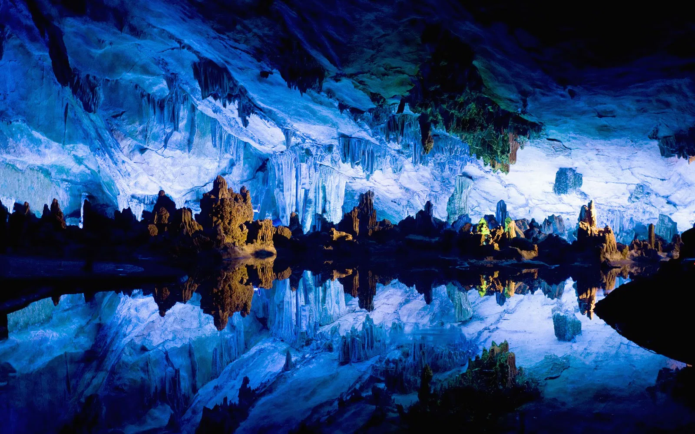
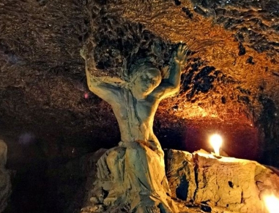
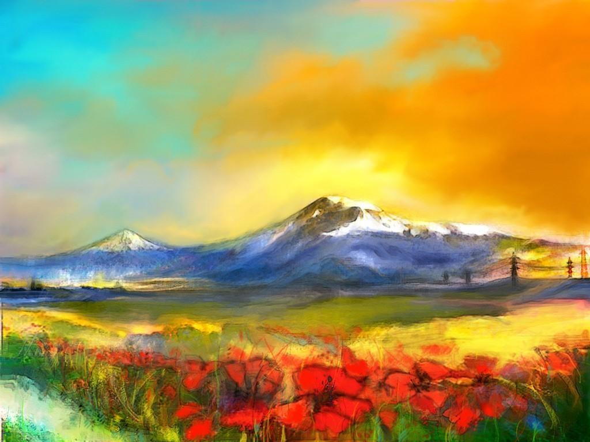
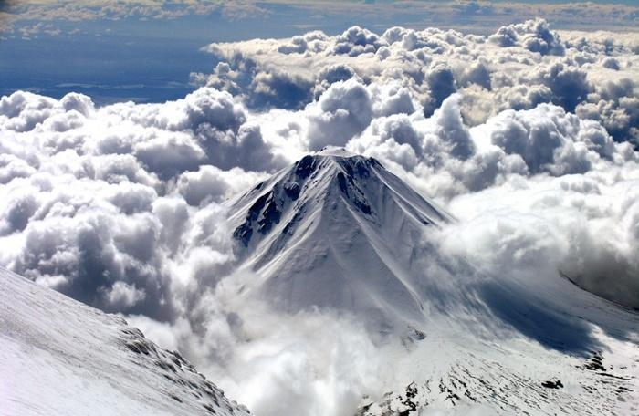
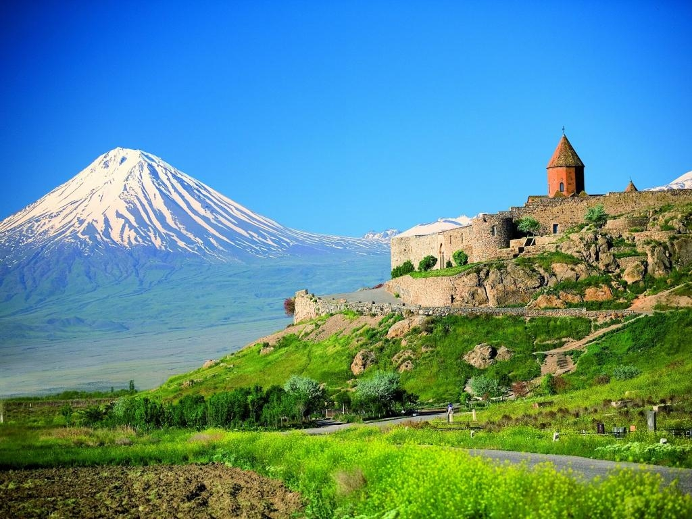
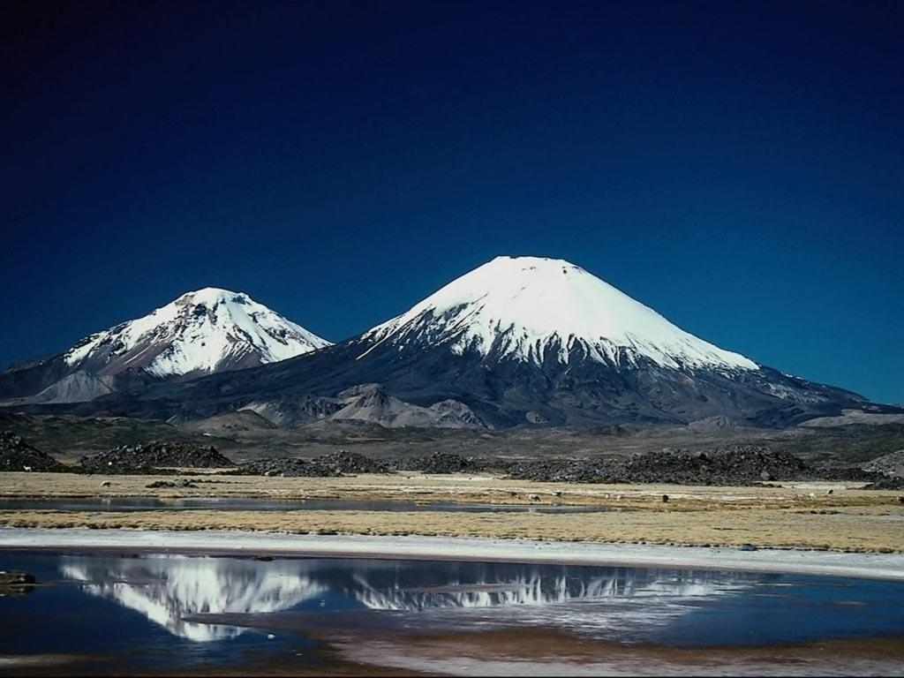

Многие туристы, которые едут в Украине в Карпаты, в Львов, в Киев или в другие города часто даже не догадываются о том, что в Украине также находится много уникальных пещер, большинство из которых, размещены на территория Тернопольской области. И самой длинной из них является пещера Оптимистическая, длина лабиринтов которой составляет 252 км. Помимо этого Оптимистическая пещера - самая длинная гипсовая пещера в мире, а также вторая по протяженности в мире.

История открытия
В 1966 году спелеологи Львовского спелеоклуба Циклоп производили топосъемку в районе пещеры Ветровая, так как, уже тогда было известно, что Подолье - очень богатый на пещеры регион. Еще несколько миллионов лет назад мощные потоки воды размывали здесь трещины в гипсовых шарах - так и образовались пещеры. Тогда Львовские спелеологи Алексей Соляр и Мирон Савчин, по указанию местных мальчишек, принялись исследовать небольшой ручей, уходящий под землю. После прохождения глиняного сифона, они обследовали первые 400 метров пещеры. После этого началось бурное исследование Оптимистической пещеры, которая, получила свое название из-за того, что другие спелеологи не верили в львовян и называли их оптимистами. Между прочем, спелеоклуб Циклоп до сегодняшнего дня занимается исследованием новых ходов, созданием карт, а также в последние несколько лет в Оптимистическую пещеру начали пускать туристов.

Особенности
Оптимистическая пещера является гипсовой горизонтальной пещерой лабиринтового типа. Заложена она на глубине 60-80 м под землей. Сама пещера не затоплена, но в ее лабиринтах спрятаны несколько озер, самое большое из которых Aqva Vitae. Его площадь составляет 82 м². Также интересно то, что со дня открытия пещеры уровень воды в этом озере не изменялся. Пещера Оптимистическая делится на 10 районов, которые отличаются один от одного морфологией ходов, структурой и цветом гипса, а также кристалами. Также в самое пещеры посетители смогут увидеть интересные скульптуры, созданные студентами художественных заведений Украины.

2.Гора Арарарт - гора преданий и природной красоты
Эту гору считают священной для армянского народа, но не многие знают, что, если смотреть на гору и границы Армении в территориальном плане, то они никак не связаны между собой. С 1921 года гора Арарат находится в Турции, но разве ее не пренадлежность к Армении дает народу не любить ее? Ее красоты воспеваются армянами постоянно и там действительно есть на что полюбоваться.

Гора Арарат в окружности достигает 40 км. Местные жители называют ее Гигантом. Она состоит из двух конусов - спящих вулканов, которые слились у основания. Они носят названия Большой и Малый Арарат. Расстояние между ними достигаем 11 км.
А вот пик горы армяне называют Агри-Даги. С армянского это переводится как «гора страданий».

У горы Арарат красивый ланшафт. Она знаменита тем, что по библейским сказаниям к Арарату пристал Ноев ковчег, после того,как ушли воды всемирного потопа. Армяне верят в то, что они были первыми, кто заселил нашу Землю после потопа.
Горный климат у подножия горы Арарат неприветлив. Поэтому в предлагаются номера с обогревателями. Здесь засушливая погода. Летом в июле воздух прогревается до +25 градусов, а зимой может опуститься до -5 градусов. Но несмотря на это туристы любят бывать здесь. Им нравится любоваться лазурными водоемами, цветущими долинами,горными скалистыми хребтами и пиками вулканов.

Гора Арарат входит в Национальный парк Турции. Туристы со всего мира приезжают сюда, чтобы полюбоваться на ледники и ледяные пещеры, где по приданию располагался Ноев ковчег.
Ледник Святого Якова — самый длинный из ледников горы Арарат. Длина его достигает около двух километров.
Но вместе с тем гора несет в себе и очень полезную роль помимо красоты. Так, например, в Анатолийской равнине земли плодородные за счет талой воды, которая стекает с вершин горы Арарат.
Народ Армении очень гостеприимный. Он всегда расскажет интересные истории и легенды об этих местах, которые я бы с удовольствием послушала бы, а вы?
